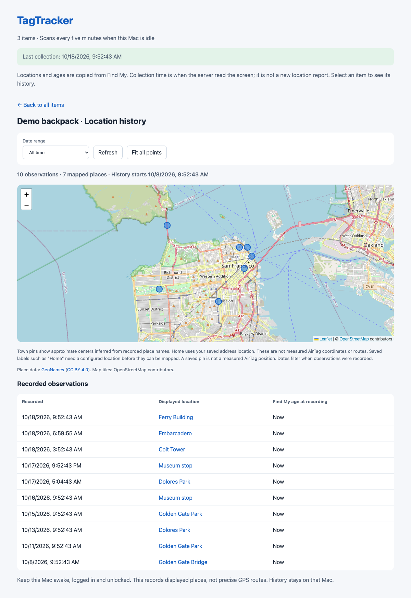
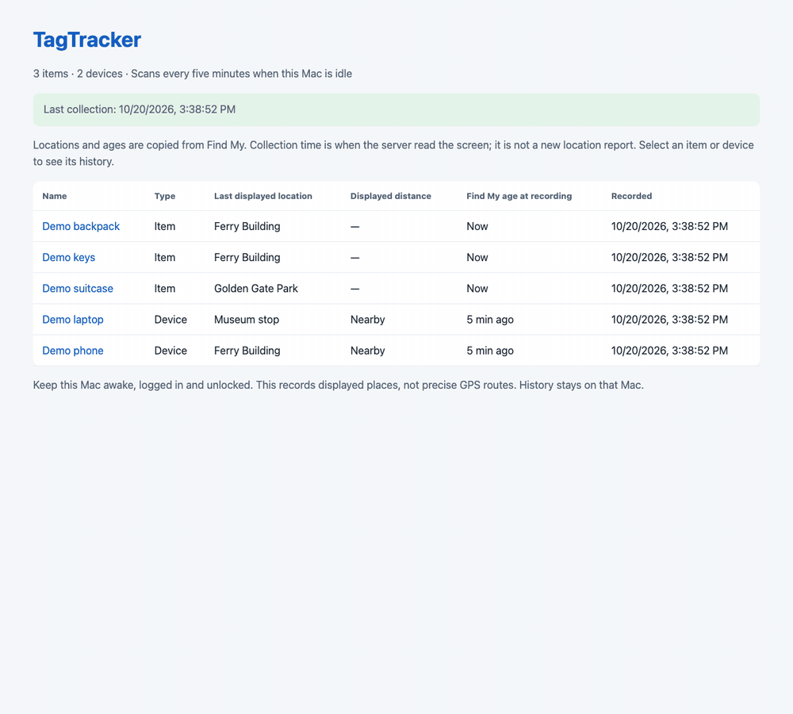
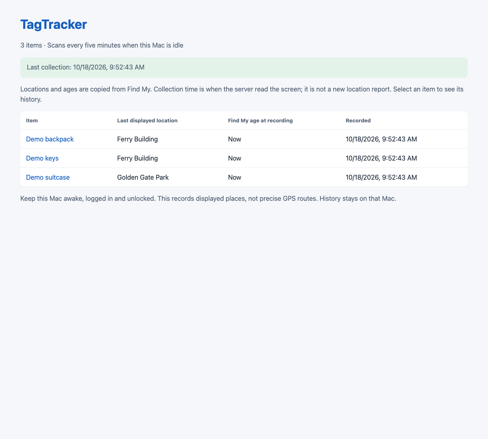

Your history, on your Mac.
Observations are saved locally in SQLite. No TagTracker account, Apple-account password, or cloud subscription.
For macOS · Free & open source
Your keys. Your bag. Your next trip. Save the places Find My displays, then look back on a map whenever you need to.
Experimental source release. Build and run on your Mac.

Real dashboard. Fictional items and observations.
Observations are saved locally in SQLite. No TagTracker account, Apple-account password, or cloud subscription.
See the last day, week, month, or all your saved history. Choose custom dates and fit the map to every displayed pin.
Collection waits for an idle Mac and pauses during macOS Screen Sharing. Find My closes when the scan ends.
A QUICK LOOK
Select a bag, switch the date range, and explore its recorded places. This is the actual dashboard, captured with sample data.

TAKE A CLOSER LOOK

MAKE YOURSELF AT HOME
TagTracker currently ships as source code. You'll need macOS, Xcode Command Line Tools, Go 1.22+, and Python 3.9+.
Read the full setup guidegit clone https://github.com/danielyaa5/tagtracker.git
cd tagtracker
make build
python3 scripts/setup.py --item 'Keys' --item 'Backpack'The setup guide includes the service commands and removal instructions.
TagTracker reads Find My's visible interface. A saved observation can contain an older location, and gaps are possible. The Mac must stay awake, logged in, and unlocked. Find My opens during a scan.
Map pins use your saved coordinates or approximate town centers. They aren't GPS fixes or measured routes. History stays local; OpenStreetMap receives requests for the map tiles you view.